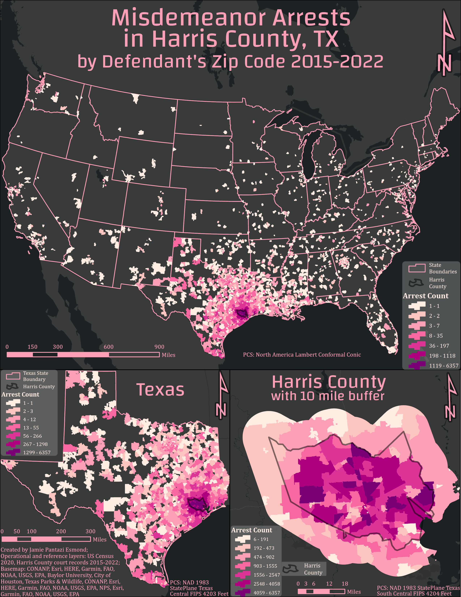
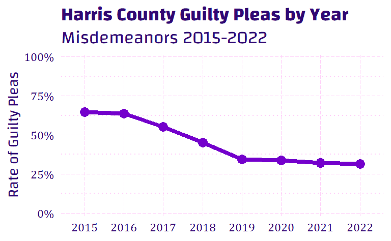
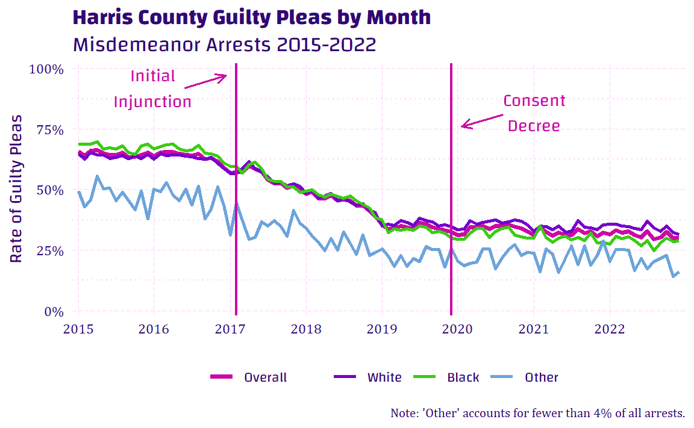
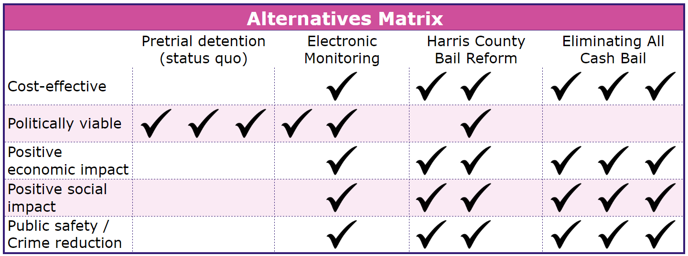

Introduction
The last decade has seen an explosion of conversations around mass incarceration. As the prison industrial complex has grown into a massive system detaining almost 2 million people in the US in 2023 (Sawyer & Wagner, 2023). It has been well documented that people of color, especially Black men, are more likely to become involved with the carceral system in the US (Eason et al., 2017; Pettit & Western, 2004; Sharkey, 2013; Simes, 2021). While race and class are inextricably intertwined, class conditions that lead to imprisonment stretch beyond the urban and racial factors usually associated with crime and subjugation (Eason et al., 2017; Pettit & Western, 2004). The removal of individuals from an already struggling community only contributes to the cycle of instability that leads to crime and harm. These individuals are fathers, workers, caregivers, and other valuable members of their community; ripping them from their families not only impacts those who may have violated the law but also those they leave behind who may have been financially or emotionally dependent on them (Gilmore, 2007).
As several places have made reforms to the cash bail system, including ending the practice for many charges, the impacts of these reforms are beginning to take shape. While some opponents to these changes worry that releasing individuals charged with a crime while they await trial will cause an increase in crime, there is no evidence of a correlation with increased crime rates (Preston & Eisenberg, 2022a). In fact, the opposite may be true; some places where cash bail has been largely eliminated have seen lower increases in crime than the national average or even reductions in crime when most places have seen increases due to the COVID-19 pandemic (Covert, 2022; Preston & Eisenberg, 2022b). Not only is bail reform not correlated with an increase in crime, but research also suggests that increased pretrial detention is linked with higher rates of conviction and recidivism (Gupta et al., 2016; Lowenkamp, 2022). It is important to assess not only whether unintentional negative impacts occur when policies are reformed, but it is also important to assess the nature and degree of positive impacts to advance the widespread adoption of policies that are good for people and equality.
The Fourteenth Amendment of the US Constitution protects liberty and equality stating, “No State shall make or enforce any law which shall abridge the privileges or immunities of citizens of the United States; nor shall any State deprive any person of life, liberty, or property, without due process of law; nor deny to any person within its jurisdiction the equal protection of the laws.” Cash bail systems violate this right by imprisoning individuals who have not been convicted of a crime simply for their inability to pay bail.
If the ultimate goal is to increase equality in the justice system while maintaining public safety, cash bail is impeding that goal. Detaining individuals because they are poor has a negative social and economic impact because it removes people from their families and their jobs. By reducing negative social and economic impacts, factors that contribute to poverty can be lessened or eliminated. A wealth of research exists to support the theory that poverty and inequality are positively correlated with increased crime (Fajnzylber et al., 2002; Fleisher, 1966; Freeman, 1999; Imran et al., 2018). Additionally, the issue of racial disparities in earnings is also a well-researched subject (Akee et al., 2019; Intrator et al., 2016; Liu et al., 2017). Thus, it follows that removing cash bail for misdemeanors would lead to more racial and economic equality, which may lead to reduced crime and reduced harm while maintaining public safety.
Hypothesis
The elimination of cash bail for misdemeanor offenses is expected to lead to a reduction in the number of guilty plea deals accepted and potentially reduce any disparity among racial groups. Using data from Harris County court records, this analysis aims to determine the change in the rate of guilty pleas before and after misdemeanor bail reform was implemented, and assess any disparity between racial groups.
Cost-Benefit Analysis
Each year, county jails similar to Harris County will spend upwards of a quarter million dollars to detain an average of around 9,000 individuals daily (Baughman, 2017). The vast majority of the people held in county jails are awaiting trial; they have not been convicted of a crime, and they are detained solely because of their inability to pay bail (Sawyer & Wagner, 2023). In addition to operation costs, detained individuals cannot work and are likely to lose employment if detained for more than a few days; this results in lost tax revenue and an increased strain on social services by their dependents (Baughman, 2017). Consistent with this cost-benefits analysis, Professor of Law and the Quattrone Center’s Academic Director Paul Heaton’s research hypothesized and confirmed millions of dollars in savings for Harris County following the implementation of misdemeanor bail reform (Heaton et al., 2017; Heaton, 2022).
Benefits
Bail reform eliminating cash bail for misdemeanor offenses has the potential to reduce jail populations by about half. In addition to the directly measurable cost savings of reduced detention, invisible benefits to individuals and society can be more difficult to measure. Shima Baradaran Baughman broke down different elements of detention and determined estimates for their monetary values, estimating an economic loss of approximately $153 per individual per day detained; this estimate covers the value of freedom, lost income, childcare, lost tax revenue, and welfare for dependents of detained individuals (Baughman, 2017). The average daily number of people detained pretrial in the Harris County jail from 2015 through 2019 was 8,932, of which approximately half were misdemeanors, and about half of misdemeanor charges determined a bail of over $100 (Harris County, 2023a). Additionally, individuals detained over 60 days are at increased risk of losing housing or property while detained; by filtering to only individuals with a bail above $2,500 and assuming 10% of those individuals lost housing and 20% lost property, that is an estimated annual cost of $5,707,207 (Baughman, 2017). The annual economic benefits in cost savings are estimated at around $129,470,786, increasing by 1% each year on the assumption that better economic outcomes are compounding (i.e. staying in a decent job now increases the chance of a better job in the future).
While it may be difficult to assess the overall health benefits of not being detained in jail, post-traumatic stress disorder (PTSD) is known to be a common concern for formerly incarcerated individuals, and even short stints of detention can cause trauma and other psychological harms (Quandt & Jones, 2021). The cost savings accrued by not needing to address potential mental health issues like PTSD can be difficult to measure. The mean number of individuals detained in Harris County in 2017 and 2018 with a bail amount above $2,500 was 10,572 people. Multiplying one-quarter of these individuals (3,756) by $18,640, the estimated annual cost of PTSD treatment, results in an estimated savings of approximately $70,016,500 per year (DeAngelis, 2023). This is a conservative number since it does not account for other mental distress or physical harm, for which there is an increased risk in restrictive, close-quarter environments.
The social costs such as relationship strain and risk of assault while in detention were calculated to be approximately $95 per person per day detained, or $76,846,667 annually (Baughman, 2017). The economic, health, and social benefits are estimated at a total of $199,487,286 for the first year.
Costs
The consent decree issued for O’Donnell v. Harris County in November 2019 required the county to select an independent monitor to evaluate and ensure “accountability, transparency, and compliance with this Consent Decree consistent with the overall goals of maximizing pretrial liberty, court appearance, and public safety” (O’Donnell v. Harris County, 2019). Though the decree does not set a requirement for the number of staff needed for the independent monitor, considering the volume of cases, this analysis assumes that up to five individuals would be paid approximately the average salary of a Harris County employee, $64,278 (Harris County Salaries - Texas, 2022). The total annual cost for the independent monitor is estimated at $321,390.
The largest upfront cost of the implementation of this change is education and training for judges and court staff on the nuances and minutia of the decree and its conditions. The exact cost of training is difficult to estimate, but a total of 39 judges oversaw misdemeanor cases in 2017; with a general estimate of $10,000 of training per judge and their staff, the total one-time cost comes to approximately $39,000.
The consent decree also requires the county to provide a website for defendants to find any and all information regarding their case, including upcoming court appearances to maintain court compliance (O’Donnell v. Harris County, 2019). The current estimate for a complex website design is approximately $15,000 upfront with a high estimate of $2,000 annually for website maintenance (Carney, 2016).
Finally, the operational costs of detention are expected to be greatly reduced resulting in cost savings for the county. Baughman estimated operating costs at approximately $83 per person per day; using the same estimate of detained misdemeanor defendants from earlier, the expected cost saving is estimated at $67,139,720, increasing by 1% each year under the assumption that less detention leads to decreased future criminal activity (Arnold Ventures, 2022; Baughman, 2017; Widra, 2022).
Public Health, Utilization, and/or Economic Impact Perspectives
The benefits of bail reform in Harris County greatly outweigh the costs from public health, utilization, and economic perspectives. Public health and safety research has found no link between detention and a decrease in crime, but there is overwhelming evidence of the harms of detention on detained individuals and their communities (Baughman, 2017; Berry & English, 2011; Digard & Swavola, 2019; Dobbie & Yang, 2021; Gius, 2018; Lowenkamp, 2022). From a utilization perspective, it is a complete waste of resources to detain individuals who are not a threat to the community instead of allowing them to await adjudication at home with their families and retain employment. Economically, the only cost of the change is a website and several new employees of the county; weighing those costs against the monetary savings of jail operation and the positive impact of retained employment and housing, the difference is vast.
Sensitivity Analysis
Given the incredible potential economic and social benefits of reducing pretrial detention, from a dollar standpoint, this policy change is highly recommended over the baseline scenario of detaining individuals charged with a misdemeanor before trial if they lack the economic means to pay a given cash amount for bail. Considering the benefit-cost ratio for implementation is 4.1 and the status quo is 0.0002, the county stands to save $1.3 billion over five years instead of losing $328 million.
Assuming a 7% discount rate and a 3% inflation rate, the total discounted net benefit from a misdemeanor bail reform policy is estimated at $1.3 billion over five years. Even a conservative discount and inflation rate of 8% and 4%, respectively, estimates a discounted net benefit of $1.2 billion over five years. The baseline scenario with no change is estimated to cost $72.8 billion dollars at the 10% rate. From a purely dollars-and-cents perspective, implementation of misdemeanor bail reform is a no-brainer.
Impact Evaluation
While there are arguably many positive outcomes that could be impacted by bail reform and the elimination of cash bail, the most important outcomes may include greater equality in the justice system, reduced negative social and economic impact, reduction of factors that contribute to poverty, and reduced crime and harm in general. Several of these outcomes have begun to garner attention from advocates publishing data on changes after these reforms (Heaton, 2022; Widra, 2022). Some of these outcomes are broad and difficult to measure, but inequality in the justice system can be measured in part by assessing disparities around racial identity in who chooses to accept a guilty plea deal. Administrative court records are available from Harris County for the bond amount and the outcome of the charges along with demographic attributes.
To measure equality in the justice system, racial disparities must be considered. An obvious place to start might be with the rate of arrests, convictions, and sentencing across individuals with different racial backgrounds because this could illuminate clear patterns of discrimination inherent in the system.
Many individuals have stated that they chose to agree to a plea deal because they could not afford bail and the alternative was to wait in jail for a court appearance (Subramanian et al., 2020). If the cost of bail was no longer an obstacle, the rate of individuals accepting plea deals should decrease because innocent people would not normally agree to a guilty plea without the coercion of pretrial detention. To measure the impact of bail reform on economic disparity in the justice system, we will use the rate of individuals agreeing to plea deals after arrest for each month several years before and after implementation. If the rate changes after the elimination of cash bail for misdemeanors in Harris County, there is evidence that detention was a primary reason for considering a plea deal.
Data
The data comes from the Harris County court records, available to the public on the county’s website (Harris County, 2023b). The data is available to download by offense category. Data for each offense from 2015 through 2022 were downloaded and combined into a single dataset. The cleaned data was filtered to include only misdemeanor arrests; in the case of multiple charges, only arrests that did not include a felony charge were included. Arrests where bond was denied were also excluded from the analysis. The filtered data was summarized by year, month, and race to determine the rate of cases that resulted in a guilty plea agreement for each group and time segment. Each arrest record and each month in the summarized data was labeled to indicate if it was before or after the consent decree in November 2019. For the primary analysis, the unit of analysis is each month, and the outcome variable is the rate of guilty pleas.
Scope
The scope of the issue is made evident in the data. By using defendant zip codes (when reported) and mapping those to see the geographic scope, the map below shows that individuals from every state in the US (Hawaii and Alaska are not shown) have been arrested for a misdemeanor crime in Harris County over the eight years in this analysis (see Figure 1). Detention is a stressful situation in any case, but the financial strain is easily exasperated by detention far from home and support structures, and may very well cause expensive travel disruptions.

Summary Statistics
When summarizing the data by bail amount (divided into five categories) and time of arrest (before or after implementation), it is notable that the vast majority (96.7%) of defendants had a bail amount set between $1 and $50,000, and 85.7% were between $1 and $5,000 (see Table 1). Additionally, the rate of guilty pleas accepted fell substantially in every bail category under $50,000, with the largest drop for bail amounts under $5,000. Though public safety is often the concern about releasing defendants pretrial, the total number of arrests fell dramatically in the years following the initial injunction (see Table 2, Figure 2).
| Guilty Plea | Dismissed | Deferred | Probation | Conviction | Acquitted | |||||||
|---|---|---|---|---|---|---|---|---|---|---|---|---|
| Count | Rate | Count | Rate | Count | Rate | Count | Rate | Count | Rate | Count | Rate | |
| No Bail | ||||||||||||
| Before | 4,231 | 70.7% | 1,528 | 25.5% | 172 | 2.9% | 3 | 0.1% | 40 | 0.7% | 8 | 0.1% |
| After | 1,306 | 35.4% | 2,004 | 54.3% | 348 | 9.4% | 2 | 0.1% | 3 | 0.1% | 2 | 0.1% |
| $5,000 and Under | ||||||||||||
| Before | 97,925 | 50.6% | 81,001 | 41.9% | 13,043 | 6.7% | 431 | 0.2% | 711 | 0.4% | 307 | 0.2% |
| After | 26,712 | 28% | 65,197 | 68.2% | 3,280 | 3.4% | 80 | 0.1% | 163 | 0.2% | 102 | 0.1% |
| $5,000-$50,000 | ||||||||||||
| Before | 19,087 | 73.2% | 3,821 | 14.7% | 3,005 | 11.5% | 33 | 0.1% | 88 | 0.3% | 29 | 0.1% |
| After | 7,563 | 67.4% | 2,229 | 19.9% | 1,401 | 12.5% | 5 | 0% | 11 | 0.1% | 4 | 0% |
| $50,000-$100,000 | ||||||||||||
| Before | 564 | 84.3% | 68 | 10.2% | 33 | 4.9% | - | - | 3 | 0.4% | - | - |
| After | 422 | 84.2% | 32 | 6.4% | 46 | 9.2% | - | - | - | - | 1 | 0.2% |
| Over $100,000 | ||||||||||||
| Before | 102 | 88.7% | 9 | 7.8% | 4 | 3.5% | - | - | - | - | - | - |
| After | 92 | 92% | 2 | 2% | 6 | 6% | - | - | - | - | - | - |
| Year | Rate | Guilty Pleas | Arrests |
|---|---|---|---|
| 2015 | 64.80% | 33,235 | 51,289 |
| 2016 | 63.76% | 31,291 | 49,077 |
| 2017 | 55.12% | 23,992 | 43,529 |
| 2018 | 45.12% | 20,890 | 46,299 |
| 2019 | 34.35% | 14,817 | 43,132 |
| 2020 | 33.81% | 12,423 | 36,747 |
| 2021 | 32.02% | 12,230 | 38,191 |
| 2022 | 31.39% | 9,126 | 29,072 |

Trends
With eight years’ worth of arrests aggregated by month and year, a noticeable downward trend for the rate of guilty pleas after the injunction and through full implementation is unambiguous in Figure 3. Figure 3 plainly shows a consistent downward slope between the beginning of 2017 when the initial injunction was filed and the end of 2019 when the consent decree was issued and full implementation was required. While there appears to be little to no disparity between White and Black defendants, it is important to note that Hispanic ethnicity is not available in the data. Approximately 43% of Harris County identifies as Hispanic according to the 2021 American Community Survey (US Census Bureau, 2020). However, many Hispanic defendants may have been recorded as White when the police arrested them. More nuanced data about the individuals arrested is needed to say conclusively whether there is a racial disparity for people accepting guilty pleas after arrest.

Methods
The arrest data provides attributes about each case including the race of the defendant and the bail amount. Using OLS regression models to evaluate the correlations between time (mainly before and after the change) and the rate of guilty pleas in Harris County, we can examine the trends as the policy took effect. This approach also allows us to control for racial identity as it relates to case outcomes. For this analysis, race is divided into three categories: White, Black, and Other. Notably, the data does not include ethnicity, and individuals who identify as Hispanic are likely classified as White. As a robustness check, the case outcomes for all arrests individually are also assessed controlling for the bail amount for each case. The equations below illustrate how each model is calculated.
\[ \begin{aligned} \text{Model 1:} \operatorname{Rate} = \alpha + & \beta_{1}(\operatorname{Year}) + \epsilon \\ \\ \text{Model 2:} \operatorname{Rate} = \alpha + & \beta_{1}(\operatorname{After}) + \epsilon \\ \\ \text{Model 3:} \operatorname{Rate} = \alpha + & \beta_{1}(\operatorname{After}) + \beta_{2}(\operatorname{Race}_{\operatorname{Black}}) + \beta_{3}(\operatorname{Race}_{\operatorname{Other}}) + \epsilon \\ \\ \text{Model 4:} \operatorname{Plea} = \alpha + & \beta_{1}(\operatorname{After}) + \beta_{2}(\operatorname{Race}_{\operatorname{Black}}) + \beta_{3}(\operatorname{Race}_{\operatorname{Other}}) + \\ &\beta_{4}(\operatorname{Bail}_{\operatorname{\$5,000\ and\ Under}}) + \beta_{5}(\operatorname{Bail}_{\operatorname{\$5,000-50,000}}) + \\ &\beta_{6}(\operatorname{Bail}_{\operatorname{\$50,000-100,000}}) + \beta_{7}(\operatorname{Bail}_{\operatorname{Over\ \$100,000}}) + \epsilon \end{aligned} \]
Results
The first model shows an estimated 5.6 percentage point drop associated with each passing year since 2015; this association is statistically significant at the p < .001 level. When comparing before and after full implementation at the end of 2019, an estimated 18.8 percentage point drop in the rate of guilty pleas accepted. When controlling for racial identity, this correlation does not change because there is no meaningful difference between identified races in Harris County. The confidence intervals for each of these coefficients are all negative, which concludes that predicted values for the rate of guilty pleas will be lower than before implementation (see Table 3).
As a robustness check, the full data of individual arrests were analyzed as well. The correlation between the probability of accepting a guilty plea before and after implementation was also negative and significant to a higher degree. The case outcome model showed an even stronger correlation that the policy lowered the probability that someone would accept a guilty plea. Additionally, the higher the bail amount the higher the probability of taking a plea deal both before and after the policy change. With each increase in the bail amount category, the probability of accepting a guilty plea increases (see Table 3).
| Year | Month | Month and Race | Case Outcome | |
|---|---|---|---|---|
| (Intercept) | 112.726*** | 0.478*** | 0.533*** | 0.664*** |
| [76.035, 149.417] | [0.460, 0.495] | [0.512, 0.554] | [0.655, 0.674] | |
| Year | −0.056*** | |||
| [−0.074, −0.037] | ||||
| After | −0.188*** | −0.188*** | −0.212*** | |
| [−0.216, −0.160] | [−0.211, −0.166] | [−0.215, −0.208] | ||
| Black | −0.011 | −0.013*** | ||
| [−0.038, 0.016] | [−0.017, −0.010] | |||
| Other | −0.154*** | −0.152*** | ||
| [−0.181, −0.128] | [−0.160, −0.143] | |||
| $5,000 & Under | −0.152*** | |||
| [−0.162, −0.142] | ||||
| $5,000-50,000 | 0.124*** | |||
| [0.113, 0.134] | ||||
| $50,000-100,000 | 0.279*** | |||
| [0.250, 0.308] | ||||
| Over $100,000 | 0.346*** | |||
| [0.281, 0.411] | ||||
| N | 8 | 288 | 288 | 337336 |
| R2 | 0.90 | 0.38 | 0.60 | 0.08 |
| Note: confidence intervals in brackets (+ p < 0.1, * p < 0.05, ** p < 0.01, *** p < 0.001) |
Discussion
While these results appear to be convincing evidence of the success of bail reform policy changes in Harris County, these models have limitations. Without a control group or data on more personal factors than are available, there is no clear path to assert conclusively that the policy change caused the reduced guilty plea rate and arrests. However, by comparing Harris County to a similar county with parallel trends in guilty plea rates and arrests prior to the change, to provide a counterfactual outcome, we could isolate the causal impact of the reform. Without data from a comparison county, these results remain merely descriptive of changes in Harris County, and they are not necessarily representative of another location. Future research could use this analysis as a template to compare other locations to determine if a similar policy change might be appropriate.
As stated earlier, the data available from Harris County does not identify individuals who identify as Hispanic. Since the ethnicity accounting for almost half of the county’s residents is not represented in the data, the question of racial disparity remains elusive. The wealth of research around inequities in the criminal justice system suggests that this missing attribute in the data may be essential in revealing the truth about racial equality in the Harris County judicial system.
Furthermore, these models assume that the large sample size over eight years is large enough to provide comparable groups before and after the policy change. The sample begins two years before the initial injunction, spans the three years until the official consent decree, and three years since full implementation. The cutoff date for the analysis is November 2019, the date of the consent decree, but many courts were already reducing or eliminating bail amounts prior to full implementation; this could mean that the impact might have been even more substantial if the judge in each case were held constant. However, for this simple analysis, the assumption is that such a large sample should account for many potential confounding variables.
The impact analysis may warrant further investigation for a true causal claim, but the cost-benefit analysis is overwhelmingly positive in terms of benefits to society and enormous cost-savings for the county, with little upfront costs. Many benefits to society are not easily quantifiable in terms of dollars, and the social benefits of this reform are likely to be highly underestimated in the cost-benefit analysis. While the impact analysis may need further review to stand its own, combined with the immense positive implications of the conservative benefit estimates, the policy seems to have few drawbacks both economically and socially.
Alternatives
Three alternative policies are available surrounding the issue of pretrial detention and equity in the criminal justice system: change nothing and continue determining a bail amount without consideration of the defendant’s means to afford it, pretrial release with electronic monitoring, or eliminating cash bail for all charges. Aside from the status quo, all these policy proposals aim to reduce the number of people incarcerated unnecessarily by allowing defendants to remain with their families in their homes and jobs. Except for eliminating cash bail completely, these alternatives are relatively safe political objectives, to varying degrees. Reducing the strength and reach of the carceral system is a hard-fought battle in the political arena because detention and surveillance provide an illusion of public safety.
These alternatives exist on a spectrum of divergence from the status quo—electronic monitoring resembles detention with limited additional freedoms, the policy from Harris County allows for release after misdemeanor arrest without bail, and the complete elmination of cash bail. As expected, the further from the status quo, the less politically feasible these alternatives become. However, the fewer people the county detains, the more money saved; the more people who stay home, in their jobs, and with their families, the better the economy can grow, and families together are more likely to be healthy families.

Conclusion and Recommendations
Though some media outlets may claim that this type of bail reform allows dangerous criminals to avoid detention, these fears are entirely unfounded because the individuals impacted by this change would have been eligible for release pretrial if only they had the means to pay bail (Pekau, 2022). Political unpopularity should not prevent policy changes with the degree of benefits misdemeanor bail reform has had in Harris County. Not only does pretrial release reduce unnecessary harm to defendants and their families, the economic benefits and cost savings should be enough to quell the concerns of the “law and order” opposition. The alternatives presented here represent varying degrees of reform within the criminal justice system, and other locations considering similar reforms should consider the nature of their jurisdiction and the costs of continuing with the status quo to determine what level of reform is feasible and appropriate. Harris County serves as an excellent example of how misdemeanor bail reform can increase equality in the justice system and save the county millions in savings and benefits.